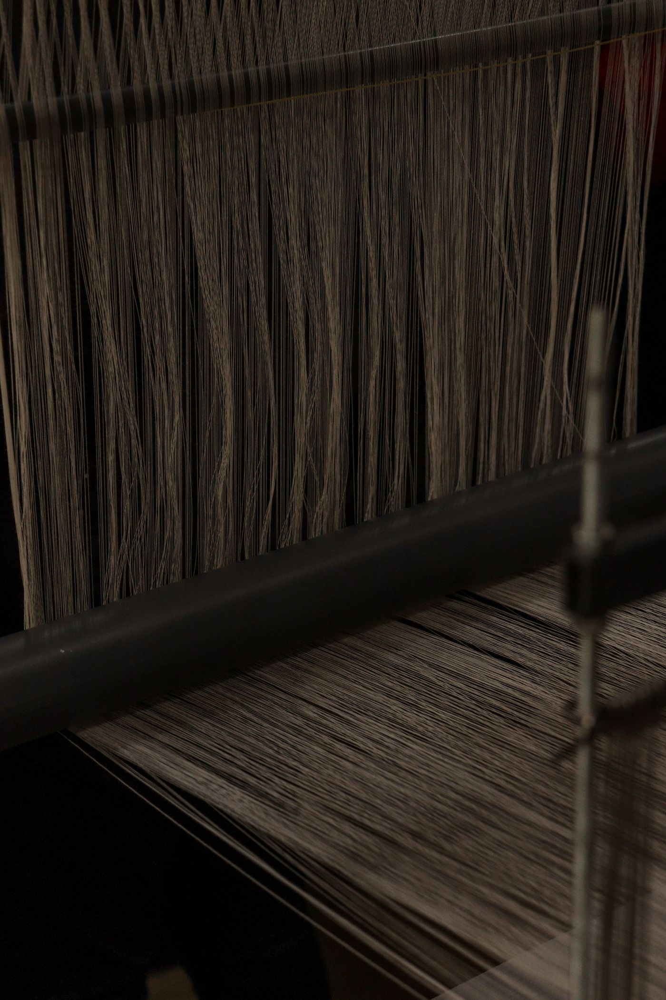

01 · FABRIC
Woven fabric production
Polypropylene tapes are woven into fabric for bag construction, with the specification guided by the product and application.
Manufacturing capabilities
From woven fabric and bag construction to printing and order review, our capabilities support industrial packaging tailored to your product and handling requirements.
An integrated approach
Good packaging begins with a clear specification. We work through the product, load, dimensions and handling needs, then align construction and finishing choices with the intended application.

Polypropylene tapes are woven into fabric for bag construction, with the specification guided by the product and application.

Panels, lifting loops and selected filling or discharge features are assembled to match the agreed bag style and order details.

Flexographic printing options support product and brand identification. Layout and print requirements can be discussed during specification.

Finished orders are reviewed against the agreed requirements and prepared for packing and dispatch.
Have a specific requirement?
Share your product, handling needs and desired bag details with our team.